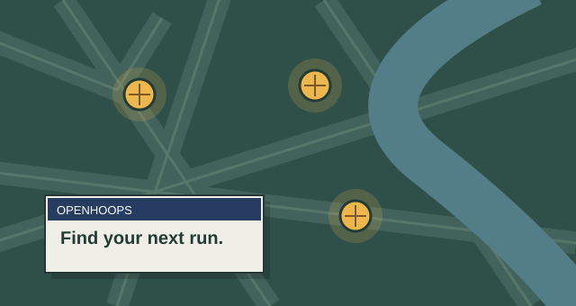
PROJECT SKETCHApps.project
Find the basketball run before you leave the house.
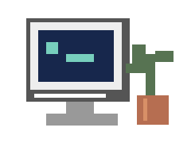
I’m Tim. I make things I wish existed.
A basketball app. A word game for my grandma.
A home on the web for someone’s business.

PROJECT SKETCHFind the basketball run before you leave the house.
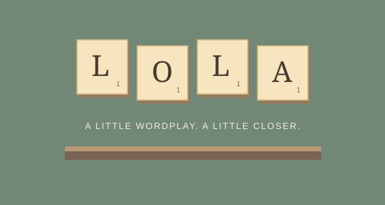
PROJECT SKETCHA word game that keeps family close, even from different places.
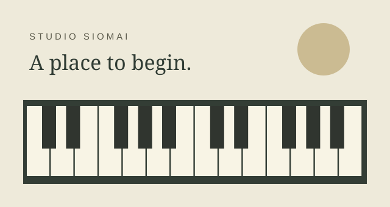
PROJECT SKETCHA welcoming home for my sister’s piano studio.
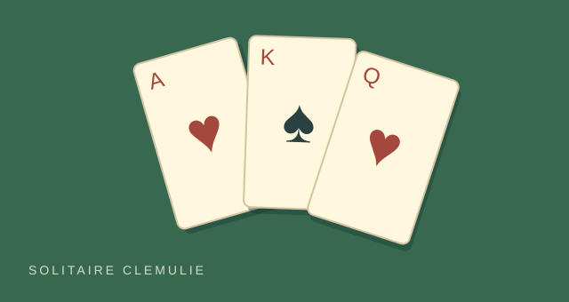
PROJECT SKETCHKlondike, made for my grandma. Good cards. No clutter.
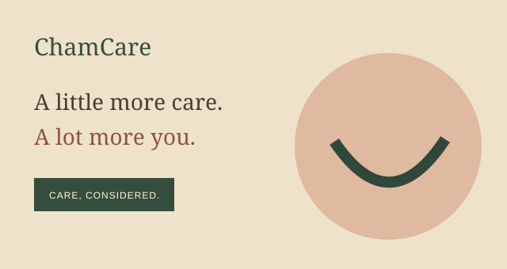
PROJECT SKETCHA calmer, more human dental website concept.
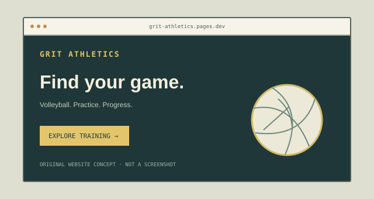
PROJECT SKETCHA home on the web for my volleyball-coach friend.
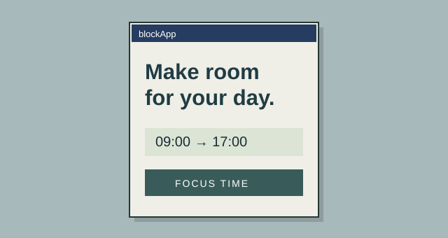
PROJECT SKETCHA little more intention about how you spend your screen time.
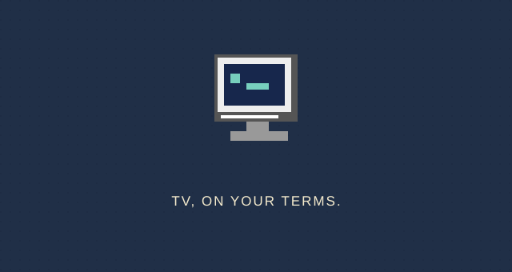
PROJECT SKETCHA TV player that starts with “what should I watch?”
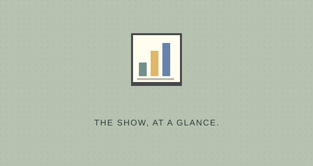
PROJECT SKETCHA useful little dashboard for a live selling session.
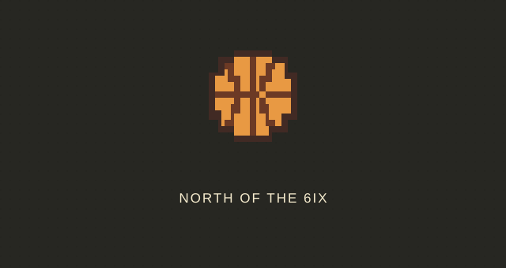
PROJECT SKETCHA bold home-court advantage for a basketball coach.
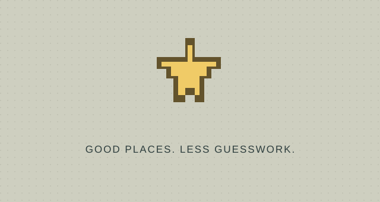
PROJECT SKETCHA clearer way to compare the places around you.
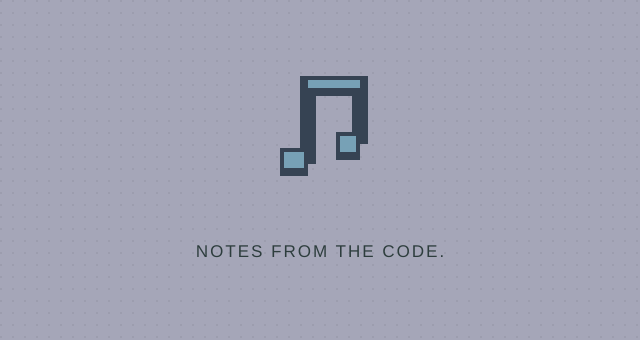
PROJECT SKETCHMusic made out of code, one synthesized note at a time.
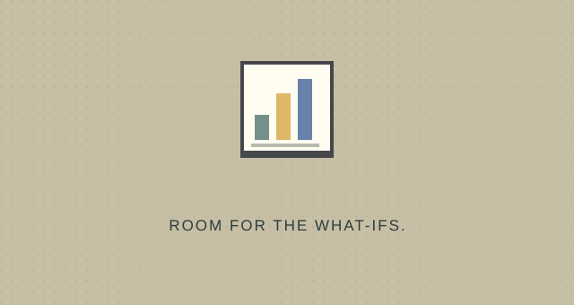
PROJECT SKETCHMake the what-ifs easier to see.
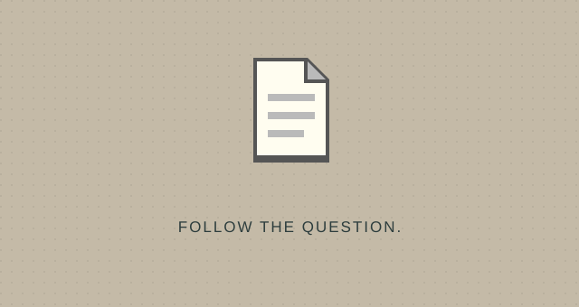
PROJECT SKETCHA small experiment in comparing shoe ratings.
No projects match those filters. Try a different word or look in all folders.
A good idea usually starts with a conversation.